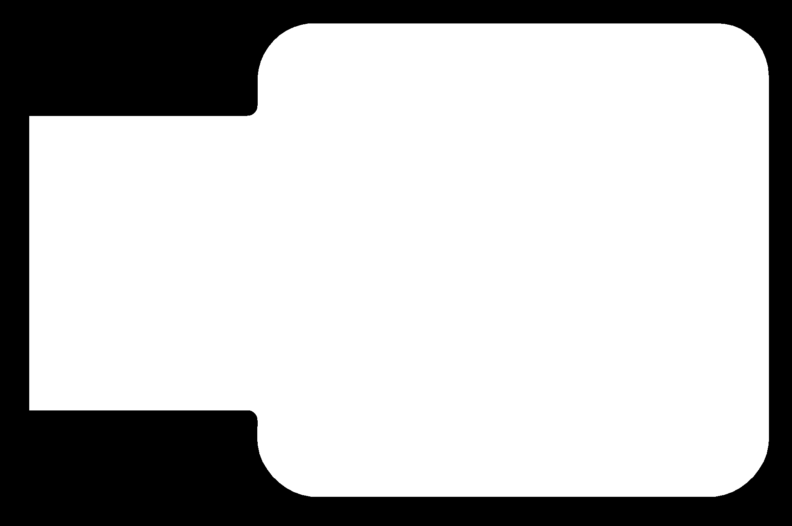

On the first and second week, Mr Chew taught us how to fabricate our own PCBs in Fablab and how to prepare the files to send it to the PCB miling machine to mill the copper traces and outlines.
Why make PCBs?
I can make customized electronics for projects and prototypes.
Process of CNC to PCB
Here is the process of from designing the circuit to preparing the files to sending to a pcb miling machine.

In-Circuit Programmer
We were tasked to make a programmer so we will be making a FTDI & UPDI programmer circuit board. We need the UPDI programmer to upload firmware to the AVR 0/1/2 series devices. Mr Chew has already designed the outline and traces for the FTDI & UPDI.
FTDI traces

FTDI outline
UPDI traces
UPDI outline
How to prepare the files?
- Download the 4 images at the bottom of this page under Files.
- It should look like this after saving all the 4 images:
- Next go to mod website which is created by Mr Steven Chew to help prepare the files for 2D CNC miling.
- Once you are in mods, right click to go to program > open server program > choose mill 2D PCB png. You will then see this screen:
- Now, lets insert our FTDI traces first by clicking on to the select png file button
- After that, in set PCB defaults, click mill traces (1/64) button to reset the settings mill raster 2D and it will be set for you.
- Next make sure the settings in path to G-code are correct
- Once all those are correct you can then click calculate under mill raster 2D to start the process, you will see a sketch start to form and a nc file type will be downloaded which can be saved into your thumbdrive. You can click on view to see how the drawing is like after calculation.
- Now, lets insert our FTDI ouline by clicking on the select png file button again.
- After that, in set PCB defaults click the mill outline (1/32) button to reset the settings mill raster 2D and it will be set for you.
- Settings in path to G-code will be the same as in Step 7.
- Once done click calculate and you will see a sketch start to form once again and another nc file will be downloaded
- Do the same steps from 1 to 8 until you end up with 4 nc files for FDTI and UPDI
- To view ur nc files, you can use NC Viewer to view and simulate how the process will be like by clicking on this NC Viewer link.


Before resetting

After resetting


Calculate

nc file downloaded after calculating


Process of Miling the PCB board
I forgot to take pictures of the process of doing the FDTI but the process of the UPDI is almost the same as doing the FDTI.
After preparing the files we send it to the laptop which is connected to a PCB miling machine. Using the software, StepCraft, we can then mill our board
We used this copper board for our in-circuit programmer
Front

Back
Here is the 2 bits that we use for miling the traces and outlines
Here are some pictures of the steps I took to make the in-circuit programmer:
Zeroing the bit
Changing the drill bit
Milling in progress
Milling the traces
Milling the outline
Sanding the rough copper edges away
Finished product of one of 2 boards. In this picture im showing the UPDI
Before Sanding
After Sanding